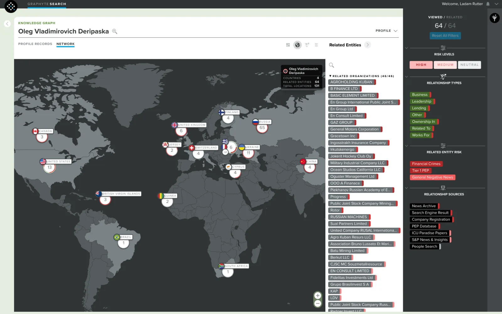
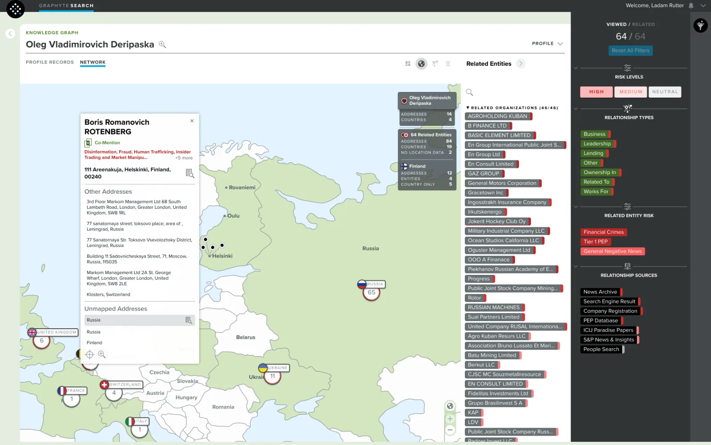
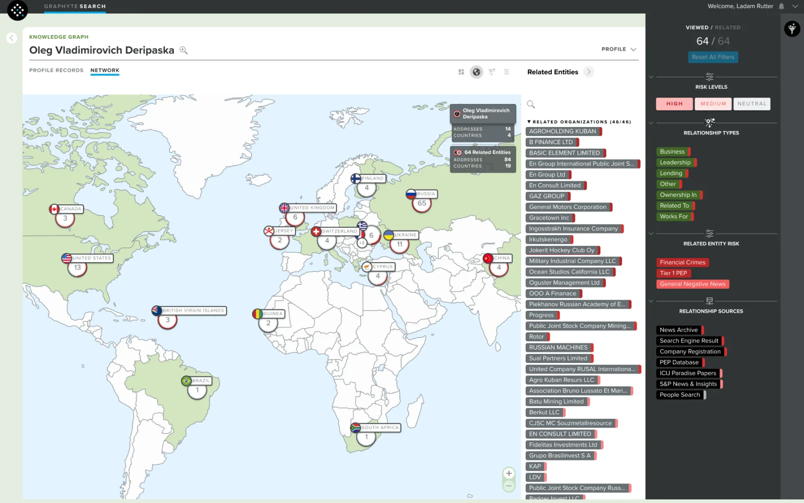

KnowledgeGraph: Quantifind
I Designed KnowledgeGraph, a geo-spatial view for Quantifind's GraphyteSearch product.. I gathered requirements, created visual comps, and wrote JIRA tickets, working with the dev team on daily calls to refine specifications.
Project Overview
KnowledgeGraph was developed as a geo-spatial extension of Quantifind’s GraphyteSearch product. Designed to provide a global perspective, this view offered analysts a visual approximation of an individual or organization’s network distributed across geographic locations.
The Challenge
Understanding networks at a global scale required more than traditional node-link diagrams. Analysts needed a spatially intuitive interface that could surface geographic insights while maintaining the investigative depth of the core product.
My Role
I led the design and prototyping of the KnowledgeGraph interface, focusing on:
Map-Based UI Design:
I designed all custom map elements, ensuring clarity, scalability, and consistency with Graphyte’s visual language.
Interactive Prototyping:
I built a high-fidelity Figma prototype with full interaction logic, allowing for seamless usability testing and iteration. The design team was in the process of switching to Figma from Sketch, so I ended up designing in both products as we worked to transition them over.
Cross-Functional Collaboration:
I worked closely with product, engineering, and fellow designers to align user needs with technical feasibility, iterating on feedback throughout the process.
Impact
KnowledgeGraph provided users with a new, intuitive way to explore global networks. It elevated investigative capabilities by allowing analysts to visually correlate geographic patterns and connections, ultimately enriching the GraphyteSearch experience. NOTE: I left the company before this feature was fully-implemented.


